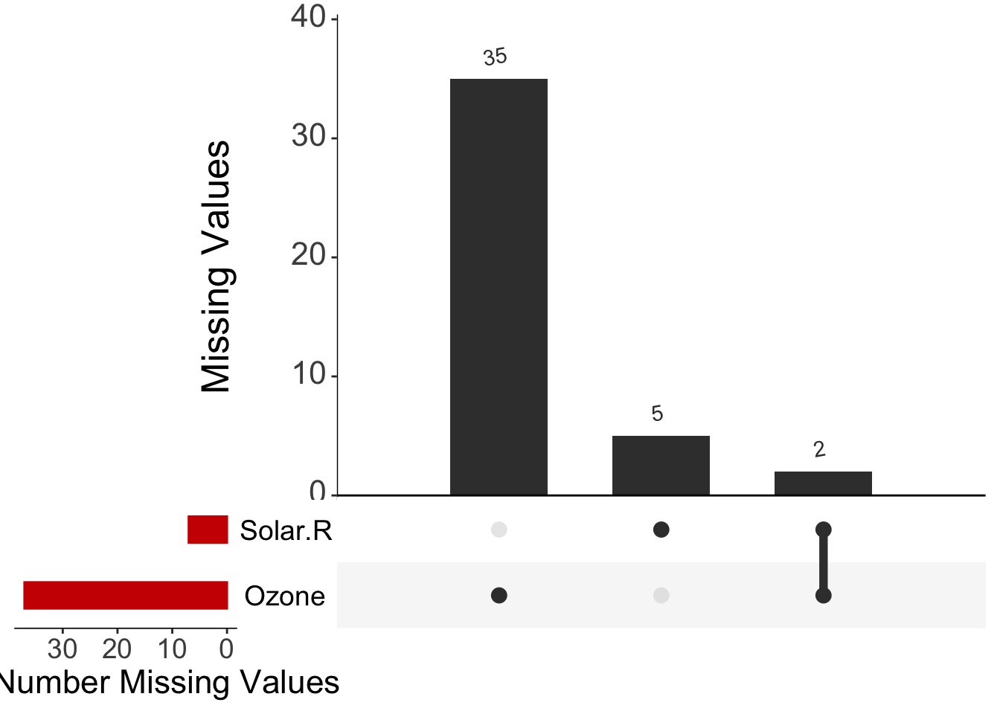
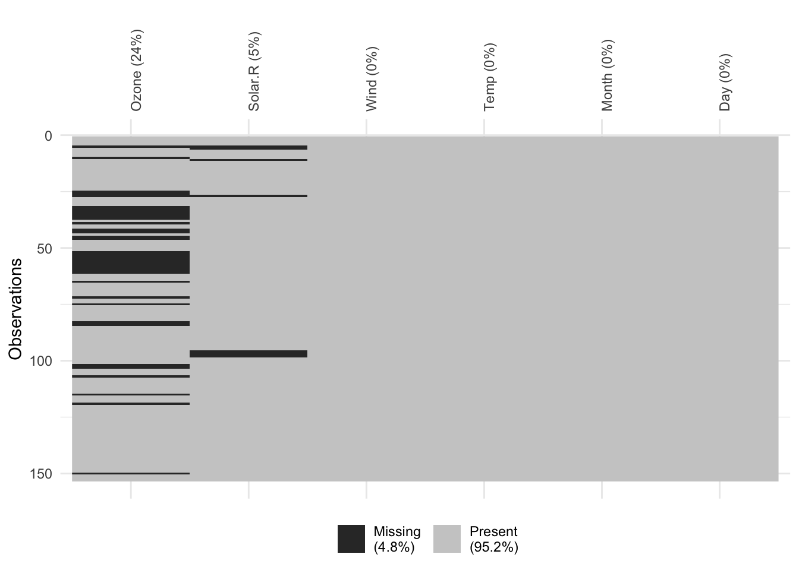

(3) Missing Pipelines - R
As with the correlation matrices before, there are really good packages to help you understand the missingness structure of your data. This is my recommendation:
Here I will be using the airquality dataset (available as default in all R) but everything would be ready for you to introduce your own dataset in a future.
summary(airquality) Ozone Solar.R Wind Temp
Min. : 1.00 Min. : 7.0 Min. : 1.700 Min. :56.00
1st Qu.: 18.00 1st Qu.:115.8 1st Qu.: 7.400 1st Qu.:72.00
Median : 31.50 Median :205.0 Median : 9.700 Median :79.00
Mean : 42.13 Mean :185.9 Mean : 9.958 Mean :77.88
3rd Qu.: 63.25 3rd Qu.:258.8 3rd Qu.:11.500 3rd Qu.:85.00
Max. :168.00 Max. :334.0 Max. :20.700 Max. :97.00
NA's :37 NA's :7
Month Day
Min. :5.000 Min. : 1.0
1st Qu.:6.000 1st Qu.: 8.0
Median :7.000 Median :16.0
Mean :6.993 Mean :15.8
3rd Qu.:8.000 3rd Qu.:23.0
Max. :9.000 Max. :31.0
We can already see with a simple summary, the ammount of missings we have per column. But what is their underlying structure?
YourDataset <- airqualityPlot 1
ll <- data.frame(is.na(YourDataset))Open up this ll object. What are you seeing here? is.na() detects all values coded as NA and gives a logical output, TRUE if truly a missing value and FALSE if not
View(ll)cols <- sapply(ll, is.logical)
ll[, cols] <- lapply(ll[, cols], as.numeric)
Miss1 <- UpSetR::upset(ll,
nsets = 20, number.angles = 10, point.size = 3.5, line.size = 2,
mainbar.y.label = "Missing Values", sets.x.label = "Total Number Missing Values",
text.scale = c(2.3, 2.3, 2, 2, 2, 1.75), order.by = "freq", sets.bar.color = "red3"
)
Miss1
Here we can see common patterns! If missing values were to happen at the same time in different variables, we would see it clearly. Lets store this figure into our own directories so we can then use it for our final research output!
Plot 2
print(vis_miss(YourDataset, warn_large_data = FALSE) +
theme(axis.text.x = element_text(angle = 90)))
# uncomment to have your pdf created
#pdf("Missing2.pdf", 20, 10)
#print(vis_miss(YourDataset, warn_large_data = FALSE) +
# theme(axis.text.x = element_text(angle = 90)))
#dev.off()Very clear outline of missingness in the whole dataset. But be careful in big datasets!
Plot 3
missing_pattern(YourDataset)
Wind Temp Month Day Solar.R Ozone
111 1 1 1 1 1 1 0
35 1 1 1 1 1 0 1
5 1 1 1 1 0 1 1
2 1 1 1 1 0 0 2
0 0 0 0 7 37 44# uncomment to have your pdf created
#pdf("PlotMissing3.pdf", 4,11)
#
#print(missing_pattern(YourDataset))
#
#dev.off()
#Final, very clear overview of patterns per variable. Spend a moment trying to understand these values. This function works great with big datasets too, although sometimes it gets a bit busy with lots of numbers.
Open up your three newly created pdfs!